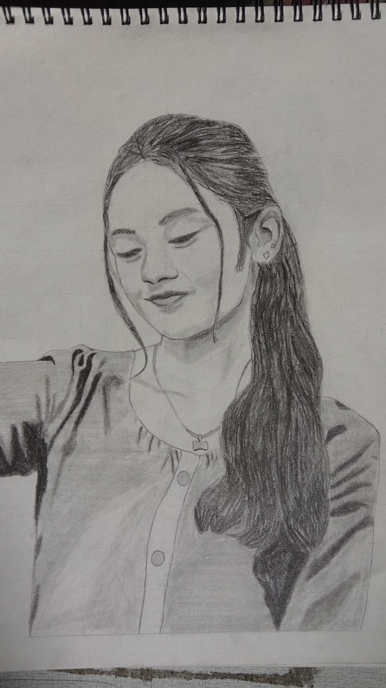
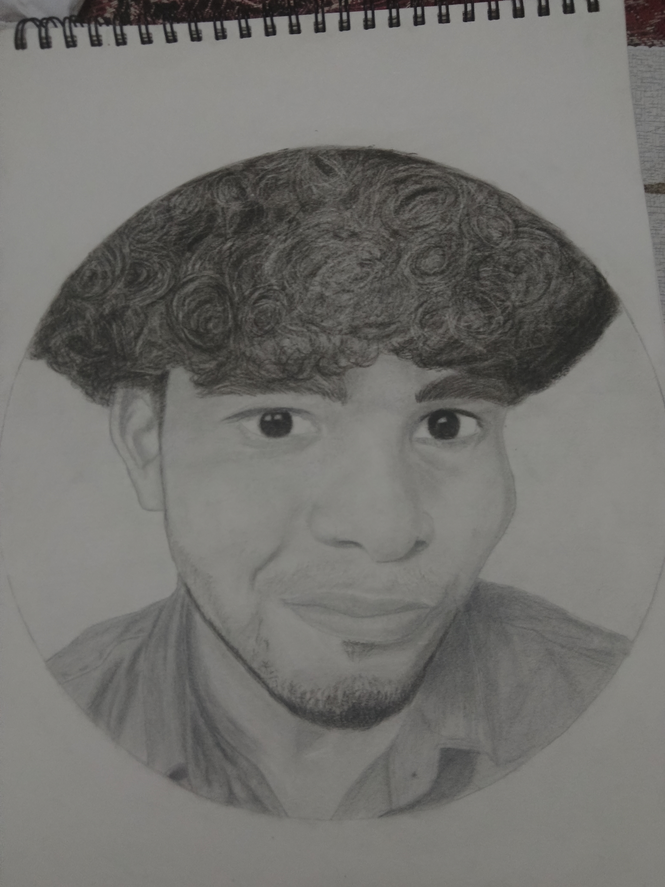
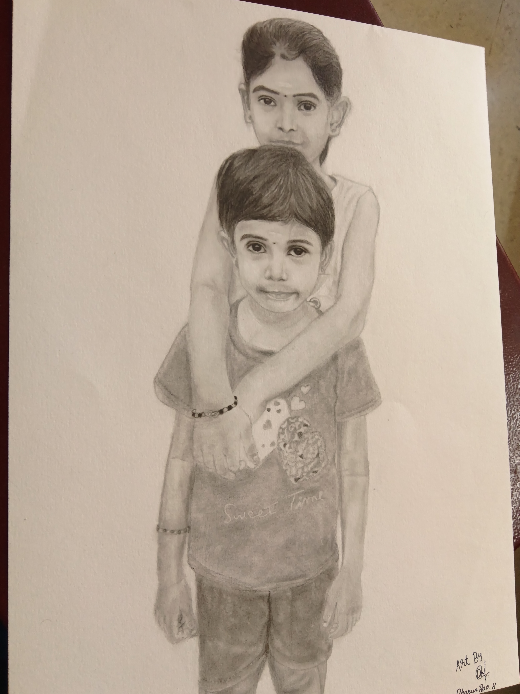
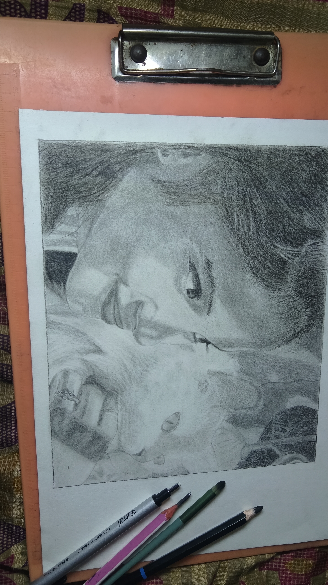
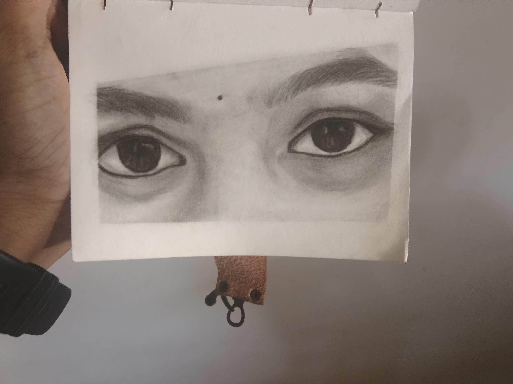
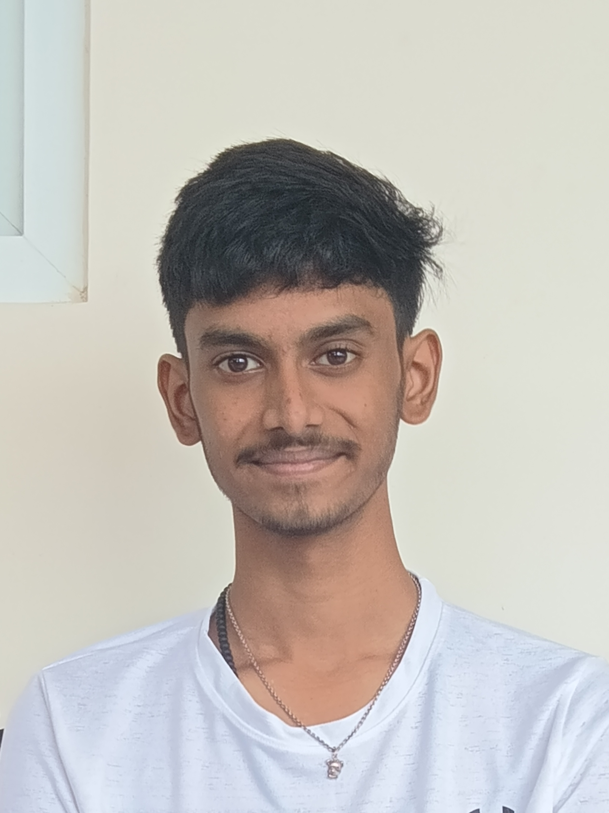

Selected Studies
06 pieces — 2023–2026
Pencil portrait

Still Life, Pear & Cloth

Realistic Portrait

Commition Work

Person and Cat

Eyes
A collection of pencil and charcoal studies — portraits, still life, and observational sketches built up stroke by stroke, value by value.






I'm a self-taught graphite and charcoal artist working mostly in traditional media — pencil, charcoal, and the occasional white chalk highlight on toned paper. My work centers on close observation: hands, faces, folds of cloth, the way light sits on an ordinary object long enough to be worth looking at twice.
Most pieces start as quick gesture sketches before I build up value slowly, layer by layer, until the form holds its own weight on the page. I keep a working sketchbook alongside finished studies — some of both are shown here.
I take on a limited number of portrait and still life commissions each season. Reach out with references and sizing and I'll follow up with availability.